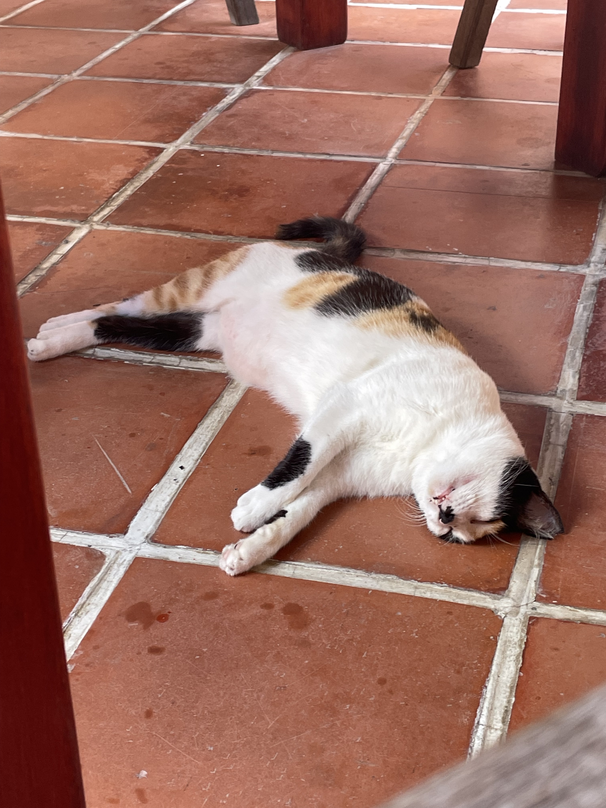
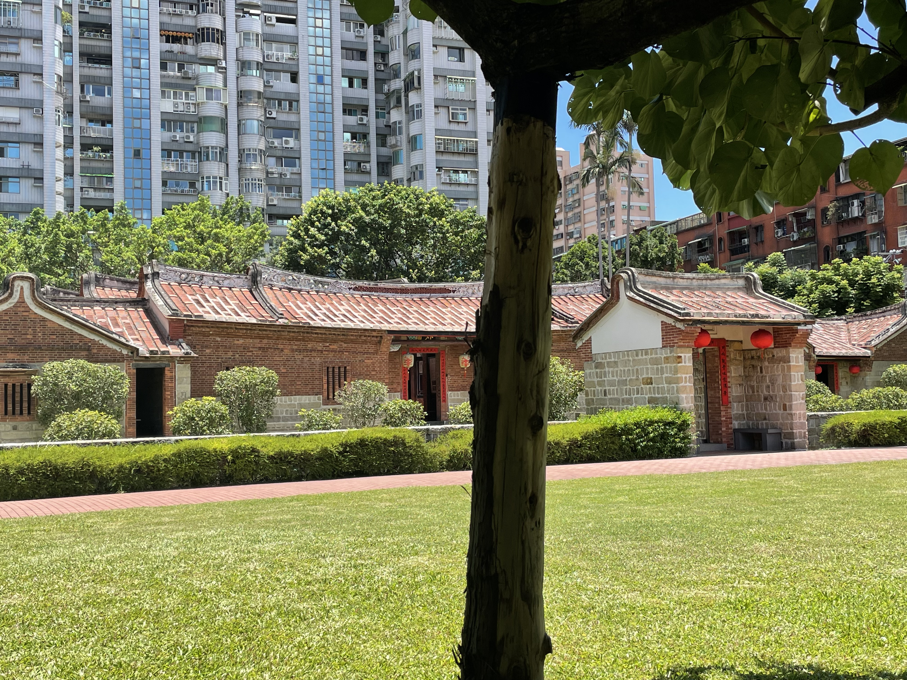
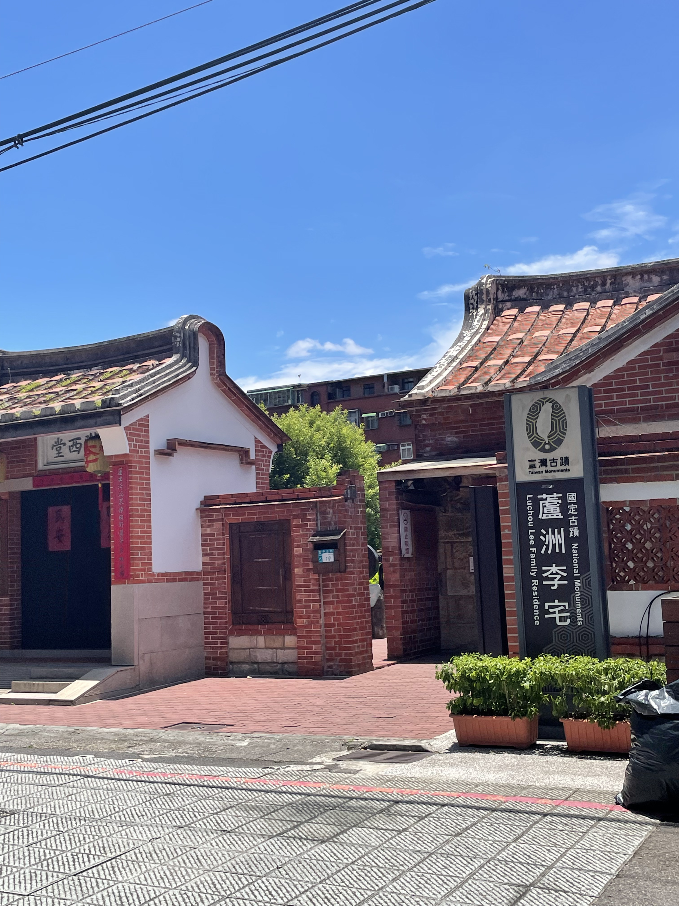
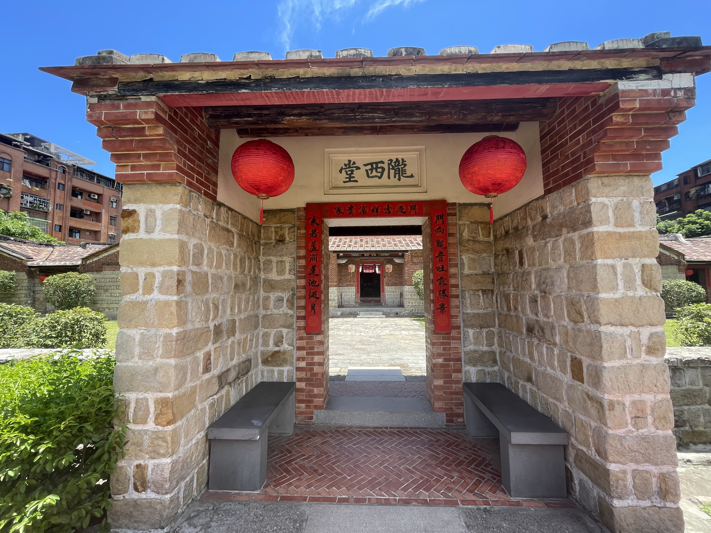

新北市蘆洲區
基本資訊
位於新北市西北側，緊鄰台北市士林與三重，地處淡水河與大漢溪交會的沖積平原，自早期便是農業與水運發展的重要地帶。隨著都市擴張與交通建設推進，蘆洲逐步轉型為高度人口密集的住宅區，形成與台北市緊密連結的生活圈。 在密集的城市結構中，蘆洲仍保有深厚的民間信仰與在地文化，傳統市場、廟宇與生活街景構成日常風貌。近年公共建設與捷運路網完善，使區域機能持續提升，呈現出兼具庶民生活感、歷史脈絡與現代都市節奏的城市樣貌。
推薦景點
| 蘆洲李宅
是蘆洲地區具代表性的傳統宅第，完整呈現清代至日治初期地方仕紳家族的生活樣貌。建築形式為典型的閩南合院，講究中軸對稱與內外層次，紅磚、木構與石材細節展現出當時成熟的工藝水準，也反映家族地位與宗族倫理在空間中的具體呈現。 在高度都市化的蘆洲市區中，李宅成為一處保存時間痕跡的歷史空間，讓人得以從現代街廓中暫時抽離，回望地方由農業聚落逐步轉型的過程。它不僅是建築本身的文化資產，也承載著蘆洲居民對地方記憶與身分認同的延續。



